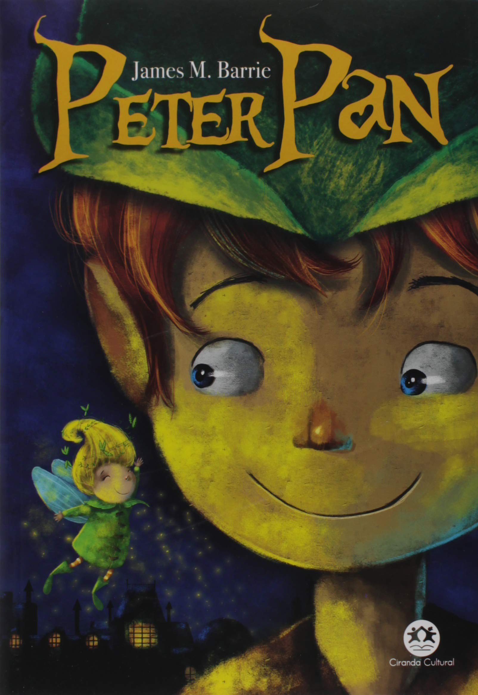

Harry Potter e a Ordem da Fênix
Sinopse
Parece impossível, mas, no bairro mais Muggle do mundo Muggle, Harry é emboscado por Dementors! Para salvar a sua vida e a do primo Dudley, Harry não tem outra hipótese senão usar magia - mesmo sabendo que isso significará a sua expulsão mais que certa de Hogwarts. Enquanto o Ministério da Magia continua a não acreditar que o terrível Senhor das Trevas está de volta, Voldemort e os seus fiéis Devoradores da Morte já começaram a preparar o seu regresso ao poder. Porém, há uma nova esperança: uma antiga ordem secreta, da qual os pais de Harry fizeram parte, voltou a organizar-se e Dumbledore está atento.
Fonte: Google Books
| Data |
Autor |
Idioma Original |
Gêneros |
Número de Páginas |
Editora |
| 21 de junho de 2003 |
J.K. Rowling |
Inglês |
Romance, Ficção juvenil, Literatura fantástica |
750 |
Pottermore Publishing |
O Senhor dos Anéis: A Sociedade do Anel

Sinopse
A Sociedade do Anel O volume inicial de O Senhor dos Anéis, lançado originalmente em julho de 1954, foi o primeiro grande épico de fantasia moderno, conquistando milhões de leitores e se tornando o padrão de referência para todas as outras obras do gênero até hoje. A imaginação prodigiosa de J.R.R. Tolkien e seu conhecimento profundo das antigas mitologias da Europa permitiram que ele criasse um universo tão complexo e convincente quanto o mundo real. A Sociedade do Anel começa no Condado, a região rural do oeste da Terra-média onde vivem os diminutos e pacatos hobbits. Bilbo Bolseiro, um dos raros aventureiros desse povo, cujas peripécias foram contadas em O Hobbit, resolve ir embora do Condado e deixa sua considerável herança nas mãos de seu jovem parente Frodo. O mais importante legado de Bilbo é o anel mágico que costumava usar para se tornar invisível. No entanto, o mago Gandalf, companheiro de aventuras do velho hobbit, revela a Frodo que o objeto é o Um Anel, a raiz do poder demoníaco de Sauron, o Senhor Sombrio, que deseja escravizar todos os povos da Terra-média. A única maneira de eliminar a ameaça de Sauron é destruir o Um Anel nas entranhas da própria montanha de fogo onde foi forjado. A revelação faz com que Frodo e seus companheiros hobbits Sam, Merry e Pippin deixem a segurança do Condado e iniciem uma perigosa jornada rumo ao leste. Ao lado de representantes dos outros Povos Livres que resistem ao Senhor Sombrio, eles formam a Sociedade do Anel. Alguém uma vez disse que o mundo dos leitores de língua inglesa se divide entre os que já leram O Senhor dos Anéis e os que um dia lerão o livro. Com esta nova tradução da obra, o fascínio dessa aventura atemporal ficará ainda mais evidente para os leitores brasileiros, tanto os que já conhecem a saga como os que estão prestes a descobrir seu encanto.
Fonte: Google Books
| Data |
Autor |
Idioma Original |
Gêneros |
Número de Páginas |
Editora |
| 29 de julho de 1954 |
J.R.R. Tolkien |
Inglês |
Literatura fantástica, Alta fantasia, Saga, Ficção de aventura, Romance de cavalaria, Fantasia heroica |
576 |
HarperCollins Brasil |
Percy Jackson e o Ladrão de Raios

Sinopse
Primeiro volume da saga Percy Jackson e os olimpianos, O ladrão de raios esteve entre os primeiros lugares na lista das séries mais vendidas do The New York Times. O autor conjuga lendas da mitologia grega com aventuras no século XXI. Nelas, os deuses do Olimpo continuam vivos, ainda se apaixonam por mortais e geram filhos metade deuses, metade humanos, como os heróis da Grécia antiga. Marcados pelo destino, eles dificilmente passam da adolescência. Poucos conseguem descobrir sua identidade. O garoto-problema Percy Jackson é um deles. Tem experiências estranhas em que deuses e monstros mitológicos parecem saltar das páginas dos livros direto para a sua vida. Pior que isso: algumas dessas criaturas estão bastante irritadas. Um artefato precioso foi roubado do Monte Olimpo e Percy é o principal suspeito. Para restaurar a paz, ele e seus amigos – jovens heróis modernos – terão de fazer mais do que capturar o verdadeiro ladrão: precisam elucidar uma traição mais ameaçadora que fúria dos deuses.
Fonte: Google Books
| Data |
Autor |
Idioma Original |
Gêneros |
Número de Páginas |
Editora |
| 28 de junho de 2005 |
Rick Riordan |
Inglês |
Romance, Mitologia grega, Fantasia, Literatura fantástica, Ficção juvenil, Alta fantasia |
387 |
Rick Riordan |
Peter Pan

Sinopse
Peter Pan, o menino que não queria crescer, inicialmente publicado como peça de teatro, ganhou os corações de muitas crianças e adultos, tornando-se um dos maiores clássicos da literatura mundial. A história do menino que vive na Terra do Nunca e se recusa a crescer foi criada a partir das histórias que Barrie contava aos filhos de sua amiga, Sylvia Davies. Mas o personagem pode ter sido inspirado também no irmão de Barrie, que morreu quando ainda era criança. Peter Pan, Sininho, Wendy, Garotos Perdidos e Capitão Gancho são personagens complexos e trazem à obra profundidade e discussões pertinentes acerca da infância.
Fonte: Google Books
| Data |
Autor |
Idioma Original |
Gêneros |
Número de Páginas |
Editora |
| 27 de dezembro de 1904 |
James M. Barrie |
Inglês |
Romance, Literatura infantil, Fantasia, Ficção juvenil, Literatura fantástica |
160 |
Ciranda Cultural |
Prólogo, ato, epílogo
Sinopse
No marco de seus noventa anos, as memórias de Fernanda Montenegro trazem o frescor de uma artista eternamente genial.
Em Prólogo, ato, epílogo, Fernanda Montenegro narra suas memórias numa prosa afetiva, cheia de inteligência e sensibilidade. Com sua voz inconfundível, ela coloca no papel a saga de seus antepassados lavradores portugueses, do lado paterno, e pastores sardos, do lado materno. Lidas hoje, são histórias que podem "parecer um folhetim. Ou uma tragédia" — gêneros que a atriz domina com maestria.
Na turma de jovens que circulavam pela rádio estava Fernando Torres, que ela reencontrou nos ensaios da peça Alegres canções na montanha, quando começaram a namorar. Fernando largou a Panair, Fernanda largou a Berlitz, e o casal se entregou de corpo e alma à arte, paixão de uma vida. Constituíram uma família e realizaram juntos um sem-número de peças, ao lado dos principais nomes do teatro brasileiro.
Em páginas de grande emoção, ela relembra os desafios de criar os filhos sobrevivendo como artistas; a busca permanente pela qualidade; a persistência combativa durante os anos de chumbo; a capacidade de constante reinvenção; o padecimento de Fernando; o inesperado sucesso internacional nos anos 1990; a crença na terra que acolheu seus antepassados imigrantes e a devoção por esse país.
Fernanda encarna o melhor do Brasil. Não surpreende que alguém que passou a vida memorizando textos tenha desenvolvido notável capacidade de rememorar com sutileza fatos ocorridos décadas atrás. A atriz que há anos encanta multidões em palcos e telas pelo mundo agora se mostra uma contadora de histórias de mão-cheia.
"Não estou romanceando. Tenho quase um século de vida, portanto posso dizer: 'Era no tempo do rei'."
"Não se sabe o que mais admirar nela: se a excelência de atriz ou a consciência, que ela amadureceu, do papel do ator no mundo. Ela não se preocupa somente em elevar ao mais alto nível sua arte de representar, mas insiste igualmente em meditar sobre o sentido, a função, a dignidade, a expressão social da condição de ator em qualquer tempo e lugar." — Carlos Drummond de Andrade
Fonte: Google Books
| Data |
Autor |
Idioma Original |
Gêneros |
Número de Páginas |
Editora |
| 2019 |
Fernanda Montenegro |
Português |
Biografia, Autobiografia |
392 |
Companhia das Letras |